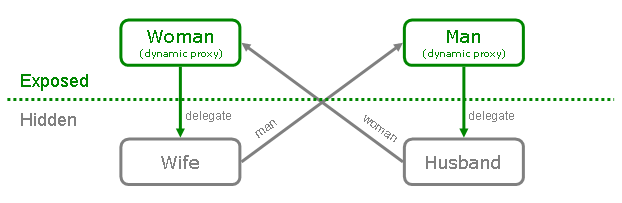

One of the new features in PicoContainer 1.0 is support for circular
dependencies and transparent hot swapping. In order to achieve this,
your components must honour
interface/implementation separation. It is then done simply by
instantiating the container with
ImplementationHidingComponentAdapterFactory:
01. // Prepare for some whacky stuff you didn't know was possible
02. ComponentAdapterFactory caf = new ImplementationHidingComponentAdapterFactory(new DefaultComponentAdapterFactory());
03. DefaultPicoContainer pico = new DefaultPicoContainer(caf);
04.
05. // Register two classes with mutual dependencies on each other. (See ImplementationHidingComponentAdapterFactoryTestCase)
06. pico.registerComponentImplementation(Wife.class);
07. pico.registerComponentImplementation(Husband.class);
Now that the registration step is done, we can get the wife and husband
objects:
08. Woman wife = (Woman) pico.getComponentInstance(Wife.class);
09. wife.getMan().kiss();
Note that we have to cast to the interface they implement, since what
the container gives us back is actually dynamic proxies that forward to
the real subjects (that are hidden from
you). Here is a UML diagram that describes the relationships between
the objects in the system.

When a component is requested via getComponentInstance(), only a
dynamic proxy for the real subject is created. Nothing more. This means
that after line 8 is executed, the only objects that exist
are the proxy for Woman. The hidden delegates aren't instantiated until
a method is called on the proxy. (The subjects are lazily
instantiated).
After line 9 is executed, all 4 objects will exist. The call to
getMan() will cause the real Wife subject to be instantiated. This will
in turn instantiate the Man proxy to satisfy Wife's
constructor. Finally, the call to kiss() will instantiate the Husband
subject.
In addition to supporting mutual dependencies,
ImplementationHidingComponentAdapterFactory also lets you hotswap the
delegates. This can be done by obtaining a reference to the
ComponentAdapter of
the component you want to swap, and call hotSwap() on it.
10. ImplementationHidingComponentAdapter husbandAdapter =
(ImplementationHidingComponentAdapter) pico.findComponentAdapter(Husband.class);
11. husbandAdapter.hotSwap(new SomeOtherMan());
This will swap out the Man proxy's current delegate with a new one.
Completely transparently to the Wife object. When the wife now calls
methods on her Man, they will be delegated to a new
instance. Scary?